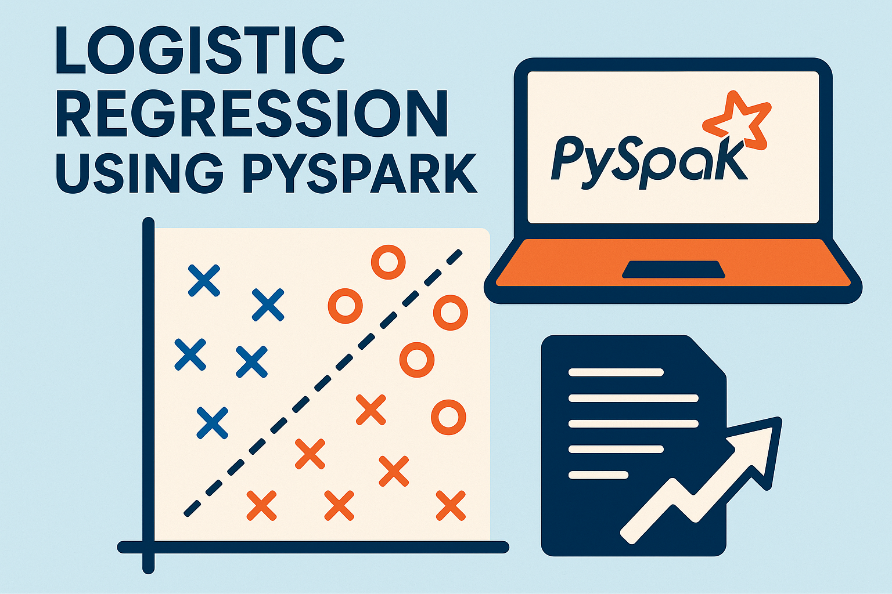

← Back to Portfolio
Logistic Regression using PySpark
A project on using PySpark to handle big data. An academic project for learning how to use PySpark. Performed a detailed comparision between PySpark and Pandas on Google Colab.

Code
Link to the PySpark Colab Notebook
Link to the Pandas Colab Notebook
Conclusion
Advantages of PySpark
- Faster than normal pandas and sklearn
- Can handle large datasets having over 100k records
- Integrated with machine learning tools
- Apache SQL is useful for detailed analysis
Disadvantages of PySpark
- Setting up PySpark is not easy as compared to Pandas and Sklearn
- Schema is not flexible and is hence difficult to update records
- No visualisation libraries and hence a need to convert to a Pandas dataframe
- Failure can lead to a crash in the PySpark system
- Not easy to import and export files